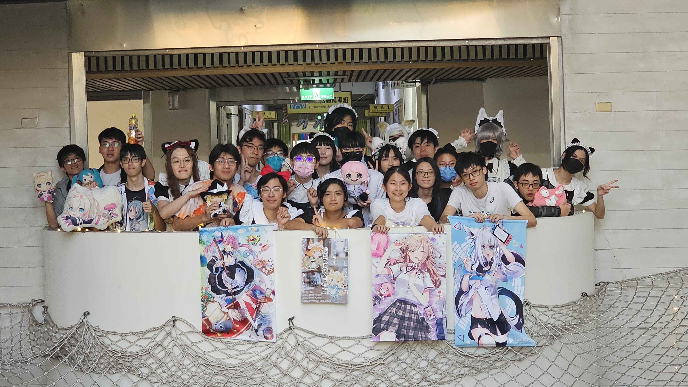
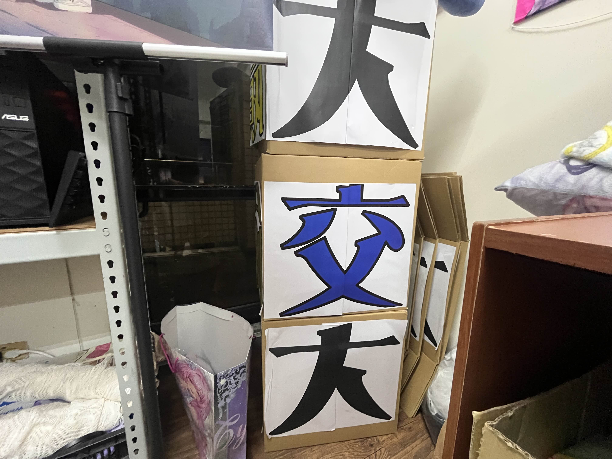
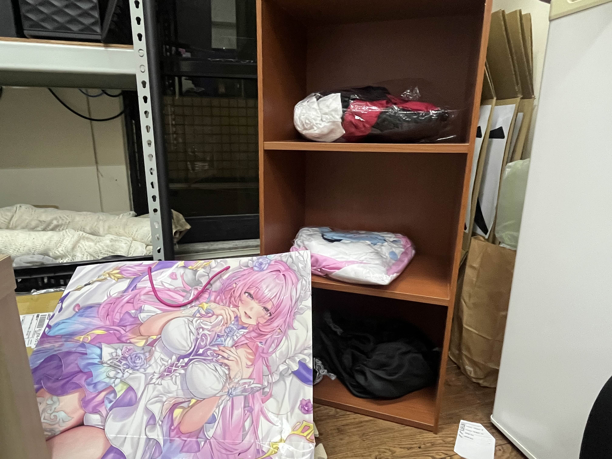

VTuber 社與動畫社的合併帶來了前所未有的跨界社團活動。從聲優欣賞會到偶像番推坑，從角色扮演到跳舞技巧，我們為不同興趣的社員提供多元化的活動選擇，促進偶像圈的交流與合作。目前，幹部群也正在努力策畫社團全新的學園偶像選拔大賽與女裝評鑑，誓言帶給社員與以往截然不同的社團體驗。

由兩社社長斥巨資打造，擁有超大電視以及柔軟沙發，無論是揪人練舞又或是一同觀賞演唱會都能提供最舒適體驗。大交大箱子代表著我們立志成為交大學園中最大最耀眼的一顆星；紅茶船則為期許我們開創新未來，帶著各位航向偶像界的頂點。

社辦中將擺設女裝衣櫥，放置所有學園偶像活動時穿著之衣物，並且開放所有社員將女裝清洗後放入此處，作為應援學園偶像的一環。
偉大的奇宏學園長，將作為我們新社團的指導老師，蒞臨全新的學園偶像社，為我們帶來創作與管理的革新，教導我們進入博雅書苑與拜仙草蜜的技巧。